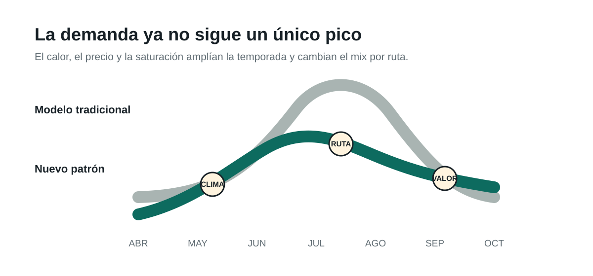

El verano europeo sigue siendo la principal temporada de viajes. Pero ya no explica por sí solo la demanda. El calor extremo, los precios y la saturación están empujando parte de los viajes hacia junio, septiembre y octubre, mientras algunos destinos del norte ganan atractivo durante julio y agosto.
Para el travel retail, el cambio no consiste en vender menos en verano. Consiste en gestionar más semanas de oportunidad con una demanda más variable por aeropuerto, ruta, destino y perfil de pasajero.
Qué está cambiando en la temporada turística europea
Europa se calienta aproximadamente al doble de la media mundial, según la Organización Meteorológica Mundial. Al mismo tiempo, la demanda de viajes sigue fuerte. La European Travel Commission indica que el 81% de los europeos prevé viajar entre junio y noviembre de 2026.
El verano no desaparece. El 86% de quienes planean viajar lo hará entre junio y septiembre, y el sur de Europa sigue liderando las preferencias. El cambio está en los bordes de la temporada y en la elección del destino:
- El 76% afirma que el clima influye en su forma de viajar.
- El 16% busca destinos con temperaturas más suaves.
- El 15% evita destinos expuestos a calor extremo o consulta la previsión antes de reservar.
- El 52% prefiere lugares menos conocidos o fuera de los circuitos habituales.
También crece el interés por viajar antes. Entre los mercados de larga distancia, la preferencia por mayo y junio aumentó del 24% al 34% entre 2024 y 2025, según la ETC. En paralelo, sus estudios sobre turismo responsable detectan que el calor está empujando parte de los viajes al sur de Europa hacia meses fuera del pico estival.

Qué significa para el travel retail
Los aeropuertos europeos recibieron un récord de 2.600 millones de pasajeros en 2025, un 4,4% más que el año anterior, según ACI Europe. El volumen crea una base sólida. El reto está en convertir ese tráfico en ingresos cuando los flujos cambian con mayor rapidez.
Más semanas de venta
Protección solar, hidratación, cuidado personal y productos de conveniencia pueden mantener relevancia durante más meses en rutas hacia el Mediterráneo.
Menos “verano europeo” genérico
Un vuelo a Grecia, Noruega o una ciudad de interior exige una combinación distinta. El surtido debe responder al destino y al clima, no solo al mes.
Mayor volatilidad
Las olas de calor, incendios o cambios de ruta pueden mover la demanda en pocos días. Stock, personal y promociones necesitan ciclos de decisión más cortos.
Mensajes contextuales
Retail media, CRM y señalización digital pueden adaptar las ofertas a la puerta de embarque, el destino, la previsión meteorológica y el tipo de pasajero.
Dónde aparece la oportunidad comercial
Extender categorías y formatos
Las marcas pueden ampliar la campaña de hidratación, solares, snacks, bienestar y cuidado personal. También pueden crear formatos portátiles y packs vinculados al destino.
Reducir fricción durante el viaje
Pagos, seguros, movilidad y asistencia pueden responder a cambios de itinerario, calor extremo y viajes fuera de temporada con productos más flexibles.
Hacer visible la demanda
Las plataformas pueden unir ventas, vuelos, pasajeros, clima y eventos para anticipar la demanda por tienda y automatizar decisiones de contenido.
Crear nuevas ocasiones
Aerolíneas, hoteles, aeropuertos y destinos pueden diseñar rutas, paquetes y experiencias específicas para primavera, otoño y destinos de clima moderado.
¿Qué categorías venderían más si la planificación se hiciera por ruta y previsión meteorológica, en lugar de por una campaña fija de verano?
Cómo ayuda la IA a capturar el crecimiento
La inteligencia artificial aporta valor cuando conecta datos dispersos y los convierte en decisiones medibles. En Marksyte ayudamos a empresas de travel retail, FMCG, servicios y tecnología a construir cuatro capacidades.
Previsión de demanda
Modelos por tienda, ruta, categoría y semana que incorporan ventas, pasajeros, reservas, clima y eventos.
Surtido y promoción
Recomendaciones sobre qué vender, dónde posicionarlo y cuándo activar una campaña o cambiar el precio.
Planificación operativa
Apoyo a inventario, reposición, personal, logística y escenarios ante episodios meteorológicos extremos.
Experiencia del viajero
Asistentes multilingües, ofertas contextuales y herramientas para ayudar al cliente antes, durante y después del viaje.
El objetivo no es automatizar cada decisión. Es reducir el tiempo entre una señal del mercado y una acción comercial, con controles claros de privacidad, calidad y supervisión humana.
Una agenda práctica para los próximos 90 días
- Mapear las señales. Identificar qué datos de ventas, rutas, pasajeros, clima y promociones están disponibles y con qué frecuencia se actualizan.
- Elegir un piloto. Seleccionar tres tiendas, rutas o categorías donde la variabilidad tenga un impacto comercial visible.
- Medir resultados. Comparar disponibilidad, margen, ventas, merma y conversión frente al método de planificación actual.
La temporada más larga abre una oportunidad real. Pero el valor no llegará por mantener la campaña de verano durante más tiempo. Llegará al entender qué demanda aparece, en qué lugar y en qué momento.
Preguntas frecuentes sobre clima y travel retail
¿El calor reducirá el turismo en el sur de Europa?
No necesariamente. Los datos muestran que el Mediterráneo mantiene una demanda alta. El efecto más probable es una redistribución parcial hacia junio, septiembre y octubre, junto con una mayor sensibilidad a las condiciones de cada destino.
¿Qué categorías de travel retail pueden beneficiarse?
Hidratación, protección solar, cuidado personal, bienestar, alimentación portátil, accesorios de viaje y productos locales. El potencial depende del destino, la ruta y el perfil del pasajero.
¿Cómo se aplica la IA al retail aeroportuario?
La IA puede prever demanda, recomendar surtido, ajustar promociones, mejorar la reposición y personalizar mensajes con datos de vuelos, pasajeros, ventas, clima y eventos.
Fuentes
- WMO, European State of the Climate 2025.
- WMO, Western Europe has hottest June on record.
- ETC, Monitoring Sentiment for Intra-European Travel, Wave 25.
- ETC, Overseas travel intentions to Europe, summer 2025.
- ETC, Assessment of Responsible Travel Behaviours of Long-Haul Travellers to Europe.
- ACI Europe, Full Year 2025 Airport Traffic Report.